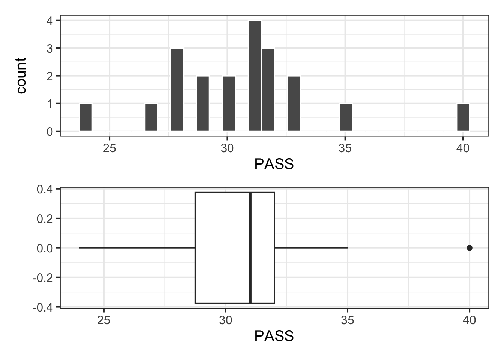

| Variable Name | Description |
|---|---|
| sid | Subject identifier |
| school | School each subject belonged to |
| PASS | Total endorsement of procrastination score |
Confidence intervals
Procrastination example
The Procrastination Assessment Scale for Students (PASS) was designed to assess how individuals approach decision situations, specifically the tendency of individuals to postpone decisions (Solomon & Rothblum, 1984).
The PASS assesses the prevalence of procrastination in six areas: writing a paper; studying for an exam; keeping up with reading; administrative tasks; attending meetings; and performing general tasks. For a measure of total endorsement of procrastination, responses to 18 questions (each measured on a 1-5 scale) are summed together, providing a single score for each participant (range 0 to 90). The mean score from Solomon & Rothblum, 1984 was 33.
Investigation:
What is the average procrastination score of Edinburgh University students?
To answer this question, we will use data collected for a random sample of students from the University of Edinburgh: https://uoepsy.github.io/data/pass_scores.csv
Necessary packages:
- tidyverse for using
read_csv(), usingsummarise()andggplot(). - patchwork for arranging plots side by side or underneath
- kableExtra for creating user-friendly tables
library(tidyverse)
library(patchwork)
library(kableExtra)Read the data into R:
pass_scores <- read_csv("https://uoepsy.github.io/data/pass_scores.csv")
dim(pass_scores)[1] 20 3To inspect the data:
head(pass_scores)# A tibble: 6 × 3
sid school PASS
<chr> <chr> <dbl>
1 s_1 GeoSciences 31
2 s_2 ECA 24
3 s_3 LAW 32
4 s_4 ECA 40
5 s_5 LAW 28
6 s_6 SSPS 31glimpse(pass_scores)Rows: 20
Columns: 3
$ sid <chr> "s_1", "s_2", "s_3", "s_4", "s_5", "s_6", "s_7", "s_8", "s_9", …
$ school <chr> "GeoSciences", "ECA", "LAW", "ECA", "LAW", "SSPS", "PPLS", "SLL…
$ PASS <dbl> 31, 24, 32, 40, 28, 31, 30, 28, 32, 29, 28, 33, 35, 33, 30, 31,…summary(pass_scores) sid school PASS
Length:20 Length:20 Min. :24.0
Class :character Class :character 1st Qu.:28.8
Mode :character Mode :character Median :31.0
Mean :30.7
3rd Qu.:32.0
Max. :40.0 Visualise the distribution of PASS scores:
Note
The boxplot highlights an outlier (40). However, this value is well within the plausible range of the scale (0 – 90), hence it is of no concern and the point can be kept for the analysis.
plt_hist <- ggplot(pass_scores, aes(x = PASS)) +
geom_histogram(color = 'white')
plt_box <- ggplot(pass_scores, aes(x = PASS)) +
geom_boxplot()
plt_hist / plt_box
Descriptive statistics:
stats <- pass_scores |>
summarise(n = n(),
Min = min(PASS),
Max = max(PASS),
M = mean(PASS),
SD = sd(PASS))stats# A tibble: 1 × 5
n Min Max M SD
<int> <dbl> <dbl> <dbl> <dbl>
1 20 24 40 30.7 3.31When estimating a parameter, in this case the mean score on the Procrastination Assessment Scale for Students (PASS) for all Edinburgh University students, we do not just report the estimate (sample average score), but also something that reflects our uncertainty in the estimate. This can either be the standard error or a confidence interval. If asked to compute a 95% confidence interval for the mean score on the Procrastination Assessment Scale for Students (PASS) for all Edinburgh University students, we could do:
# Sample mean
xbar <- stats$M
# Standard error
s <- stats$SD
n <- stats$n
se <- s / sqrt(n)
se[1] 0.74# Quantiles
tstar <- qt(c(0.025, 0.975), df = n - 1)
tstar[1] -2.09 2.09# CI
xbar + tstar * se[1] 29.2 32.2WARNING!
This code won’t work if stats stores a kable, i.e. the result of kbl(). Make sure this only stores the tibble, rather than the pretty version from kbl()!
Reporting
These three code chunks should not be visible in the report. You can simply report the CI in a paragraph using the style [LowerCI, UpperCI].
TipExample introduction
A random sample of 20 students from the University of Edinburgh completed a questionnaire measuring their total endorsement of procrastination. The data, available from https://uoepsy.github.io/data/pass_scores.csv, were used to estimate the average procrastination score of all Edinburgh University students. The recorded variables included a subject identifier (sid), the school of each subject (school), and the total score on the Procrastination Assessment Scale for Students (PASS). The data do not include any impossible values for the PASS scores, as they were all within the possible range of 0 – 90. To answer the question of interest, in the following we will only focus on the total PASS score variable.
TipExample CI interpretation
From the sample data we obtain an average procrastination score of \(M = 30.7\), 95% CI [29.15, 32.25]. Hence, we are 95% confident that a Edinburgh University student will have a procrastination score between 29.15 and 32.25, which is between 0.75 and 3.85 lower than the average score of 33 reported by Solomon & Rothblum.
NFL salary example
What was the average yearly salary of a National Football League (NFL) player in 2019?
This question is about the mean salary of all NFL players in 2019, which is denoted \(\mu\) and is a population parameter.
We are going to find the confidence interval around this mean (but what we find will apply to confidence intervals around any estimate). We will consider two scenarios:
- Entire population data available (unlikely);
- Entire population data are NOT available (more common).
Population data available (unlikely)
If we have data on the entire population of NFL players and we are interested in a parameter such as the population mean salary, we can simply compute the mean on the available population data. There would be no uncertainty and nothing to estimate: we have the entire population data, so we can easily compute the mean salary, and we would know what the actual parameter value is.
In this scenario, we would have a file containing the yearly salaries (in millions of dollars) for all players being paid in 2019 by a National Football League (NFL) team. This entire dataset represents the entire population of all National Football League players in that year.
The data on the entire population:
library(tidyverse)
nfl_pop <- read_csv("https://uoepsy.github.io/data/NFLContracts2019.csv")
head(nfl_pop)# A tibble: 6 × 5
Player Position Team TotalMoney YearlySalary
<chr> <chr> <chr> <dbl> <dbl>
1 Russell Wilson QB Seahawks 140 35
2 Ben Roethlisberger QB Steelers 68 34
3 Aaron Rodgers QB Packers 134 33.5
4 Jared Goff QB Rams 134 33.5
5 Carson Wentz QB Eagles 128 32
6 Matt Ryan QB Falcons 150 30 The population mean salary:
mu <- mean(nfl_pop$YearlySalary)
mu[1] 3.03Say we wanted to check whether 1 million was a plausible average yearly salary for a NFL player in 2019. The answer is no, it isn’t. We know the actual average salary which is 3.03 million of dollars, and this is different from 1 million.
Population data NOT available (more common)
Now suppose we didn’t know anything from the previous section.
In most research, the data for the entire population is not available as we cannot afford to collect data on the entire population. As a consequence, we cannot compute the population parameter \(\mu\), which is unknown, and we must rely on random sampling to estimate it. It is good practice to use a sample size as large as we can afford in order to obtain good precision.
Let’s pretend for now that we don’t have the entire NFL population data, and are only able to collect data for 50 players. Fortunately someone else did it for us: they chose 50 players at random and interviewed them to find out their salary. The sample data are:
nfl_sample <- read_csv("https://uoepsy.github.io/data/NFLSample2019.csv")
nfl_sample# A tibble: 50 × 5
Player Position Team TotalMoney YearlySalary
<chr> <chr> <chr> <dbl> <dbl>
1 Najee Goode 43OLB Jaguars 0.805 0.805
2 Jack Crawford 43DT Falcons 9.9 2.48
3 Tra Carson RB Lions 1.23 0.615
4 Jordan Richards S Ravens 0.805 0.805
5 Desmond Trufant CB Falcons 68.8 13.8
6 Alex Anzalone 43OLB Saints 3.47 0.866
7 Trey Burton TE Bears 32 8
8 Josh Martin 43DE Saints 0.805 0.805
9 Lavonte David ILB Buccaneers 50.2 10.0
10 Maliek Collins 43DT Cowboys 3.55 0.888
# ℹ 40 more rowsWe estimate the unknown population mean salary (what we are interested in) with the sample mean salary \(\bar x\), which we can compute from the obtained sample. The sample mean salary represents our “best guess” of the population mean salary.
xbar <- mean(nfl_sample$YearlySalary)
xbar[1] 3.36The average salary in the sample of 50 NFL players is 3.36 million dollars.
Without knowledge of the full data, we would say that we estimate the average salary of an NFL player in the year 2019 to be 3.36 million dollars.
However, we know that if we had collected a different sample, the sample mean would be a different number from 3.36 as it varies from sample to sample.
nfl_sample# A tibble: 50 × 5
Player Position Team TotalMoney YearlySalary
<chr> <chr> <chr> <dbl> <dbl>
1 Najee Goode 43OLB Jaguars 0.805 0.805
2 Jack Crawford 43DT Falcons 9.9 2.48
3 Tra Carson RB Lions 1.23 0.615
4 Jordan Richards S Ravens 0.805 0.805
5 Desmond Trufant CB Falcons 68.8 13.8
6 Alex Anzalone 43OLB Saints 3.47 0.866
7 Trey Burton TE Bears 32 8
8 Josh Martin 43DE Saints 0.805 0.805
9 Lavonte David ILB Buccaneers 50.2 10.0
10 Maliek Collins 43DT Cowboys 3.55 0.888
# ℹ 40 more rowsWe need a few elements:
- \(\bar{x}\), the sample mean which we already computed before
- \(s\), the sample standard deviation
- \(n\), the sample size
- the new multipliers to the SD based on the \(t(n-1)\) distribution
xbar[1] 3.36s <- sd(nfl_sample$YearlySalary)
s[1] 4.31n <- nrow(nfl_sample)
n[1] 50qt(c(0.025, 0.975), df = n - 1)[1] -2.01 2.01The formula to use:
\[ \left[ \bar x - 2.01 \cdot \frac{s}{\sqrt n} ,\ \bar x + 2.01 \cdot \frac{s}{\sqrt n} \right] \]
In R:
xbar - 2.01 * (s / sqrt(n))[1] 2.13xbar + 2.01 * (s / sqrt(n))[1] 4.58The 95% confidence interval is then [2.13, 4.58] million dollars. We would write this up as:
We are 95% confident that the average salary of a NFL player in 2019 is between 2.13 and 4.58 million dollars.